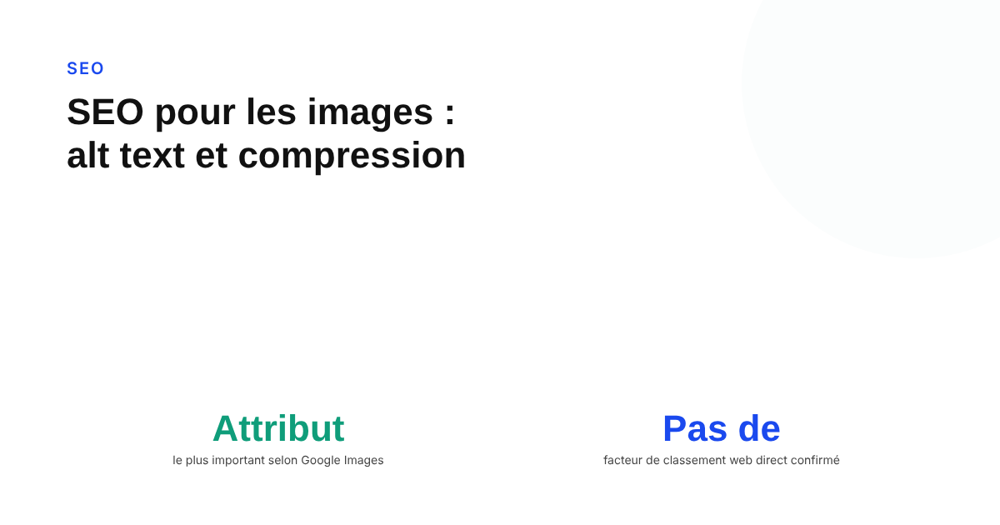
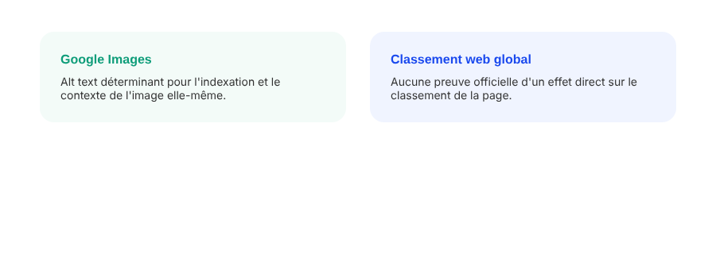

SEO pour les images : alt text, compression, et visibilité dans Google Images
« L'alt text est important pour le SEO », « l'alt text n'est pas une balle magique » : les deux phrases viennent de porte-parole officiels de Google, à deux ans d'intervalle. Ce n'est pas une contradiction gratuite — c'est que la question elle-même est mal posée.

Peu de sujets SEO génèrent autant de déclarations officielles contradictoires que l'alt text. En 2020, John Mueller, de l'équipe Search de Google, affirme en Office Hours que pour la recherche en général, « on n'a pas vraiment besoin de s'en soucier ». En 2021, Martin Splitt, développeur chez Google, écrit sur les réseaux sociaux : « oui, l'alt text est important pour le SEO aussi ! ». Plus tard la même année, Mueller précise : « l'alt text n'est pas une balle magique SEO ». Ces trois citations sont toutes authentiques. Elles ne se contredisent pas vraiment une fois qu'on distingue de quel SEO on parle.
Deux visibilités différentes, deux rôles différents
La documentation officielle de Google sur le SEO image tranche la question à sa manière : elle appelle l'alt text « l'attribut le plus important pour fournir des métadonnées sur une image » — mais dans le contexte précis de la recherche d'images, pas du classement de la page dans les résultats web classiques. C'est la clé pour réconcilier les citations ci-dessus : l'alt text n'aide pas une page à mieux se classer sur une requête texte, mais il reste le signal principal qui permet à une image d'apparaître dans Google Images et d'y être comprise, en complément des algorithmes de vision par ordinateur. Deux objectifs différents, deux poids différents.

Ce que Google dit explicitement éviter
La documentation officielle est claire sur un point qui, lui, ne fait débat chez personne : éviter le bourrage de mots-clés dans l'alt text. Un texte alternatif doit être « utile, riche en information », pas une liste de mots-clés accumulés dans l'espoir de capter plus de requêtes. Pour une image qui sert de lien, Google précise que l'alt text est traité « de façon similaire à l'ancre d'un lien texte » — un argument de plus pour écrire une description précise plutôt qu'un mot-clé répété. Pour une image purement décorative, sans valeur informative, la pratique recommandée reste un attribut alt vide, pas un texte forcé qui n'ajoute rien.
La vraie raison pour laquelle le poids des images compte
La documentation Google reconnaît que « les images sont souvent le plus gros contributeur au poids total d'une page, ce qui peut la rendre lente et coûteuse à charger » — sans donner de seuil de compression précis. L'effet sur le SEO n'est donc pas direct : il passe par la vitesse de chargement et les Core Web Vitals, qui eux sont un signal d'expérience de page reconnu par Google. Compresser ses images (formats modernes comme WebP, dimensions adaptées à l'affichage réel, lazy loading pour les images hors écran) reste donc une priorité — mais pour la même raison que n'importe quelle autre optimisation de vitesse, pas parce que la compression serait elle-même récompensée.
Ce qui est réellement requis pour les rich results
Pour qu'une image obtienne un badge ou un résultat enrichi dans Google Images (recette, produit, etc.), la documentation est stricte : l'attribut image des données structurées est « un champ requis » — son absence ou une erreur de balisage rend simplement le contenu inéligible à l'enrichissement. C'est l'un des rares points du SEO image où la règle est binaire plutôt que graduelle : soit la donnée structurée est correcte et complète, soit l'image n'apparaît jamais sous cette forme enrichie.
La check-list qui tient compte de cette nuance
Alt text descriptif et sans bourrage sur chaque image porteuse de sens, attribut vide sur le purement décoratif, formats compressés et dimensions adaptées pour protéger la vitesse de page, données structurées complètes si un rich result est visé : aucune de ces actions n'est un levier de classement caché, mais réunies, elles couvrent les deux vrais canaux où une image peut apporter du trafic — Google Images d'un côté, l'expérience de page de l'autre.
FAQ
L'alt text est-il un facteur de classement Google ?
Pas pour la recherche web générale, selon John Mueller de Google en 2020, qui a dit qu'il n'y avait pas vraiment à s'en soucier pour le classement global. L'alt text compte en revanche directement pour la visibilité dans Google Images, où il reste, selon la documentation officielle, l'attribut de métadonnées le plus important pour une image.
Faut-il mettre un alt text sur toutes les images ?
Non. Pour les images purement décoratives, la bonne pratique est un attribut alt vide (alt=""), pas un texte forcé. Pour une image utilisée comme lien, Google traite l'alt text de façon similaire à l'ancre d'un lien texte.
La compression d'image a-t-elle un impact SEO direct ?
Indirect mais réel : Google indique que les images sont souvent le plus gros contributeur au poids total d'une page, ce qui peut la ralentir. Une page lente dégrade les Core Web Vitals, qui eux comptent comme signal d'expérience de page — l'effet passe par la vitesse, pas par un bonus SEO propre à la compression.
Envie d'un audit SEO qui couvre aussi vos images ?
Pour aller plus loin, voir la page SEO, et l'article INP et Core Web Vitals : le seuil qui compte vraiment en 2026.
Pour continuer sur ce sujet.